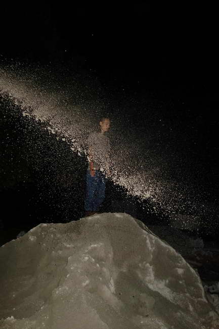
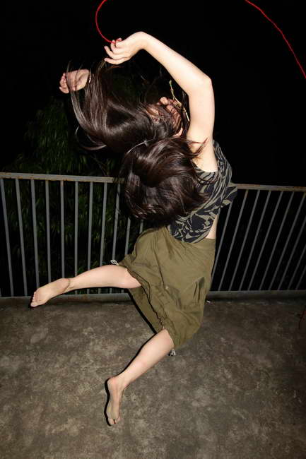
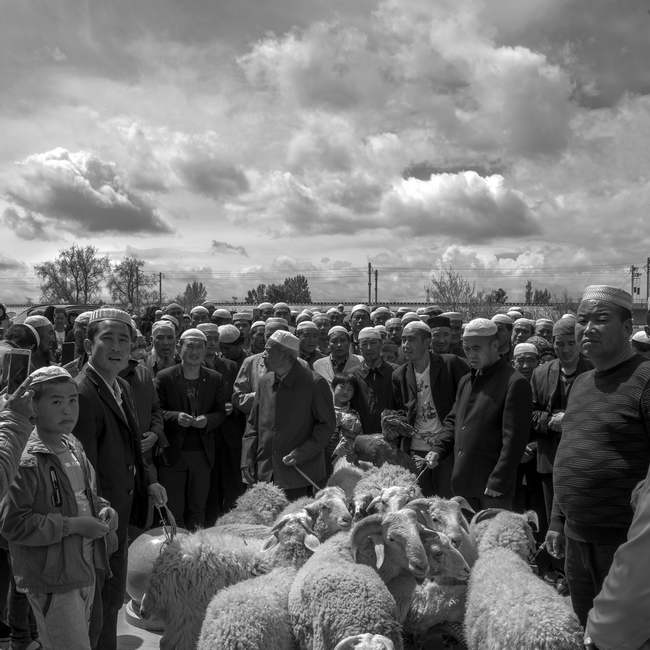
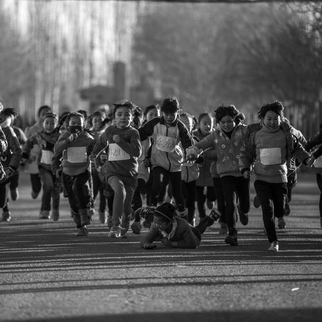
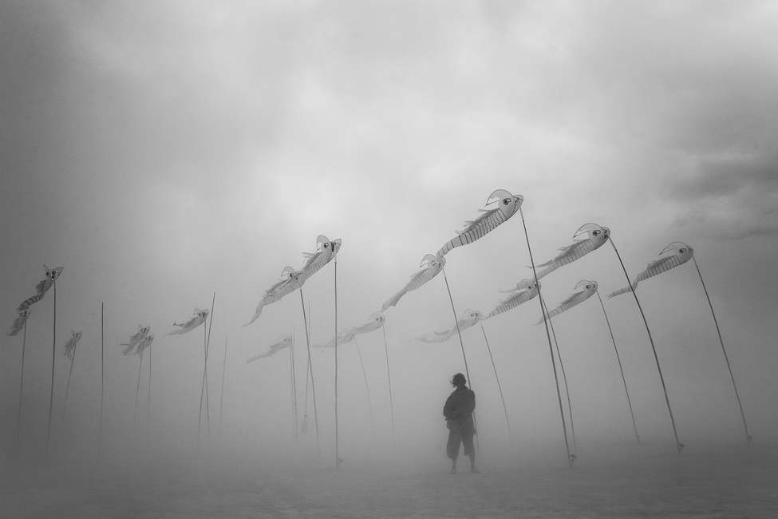
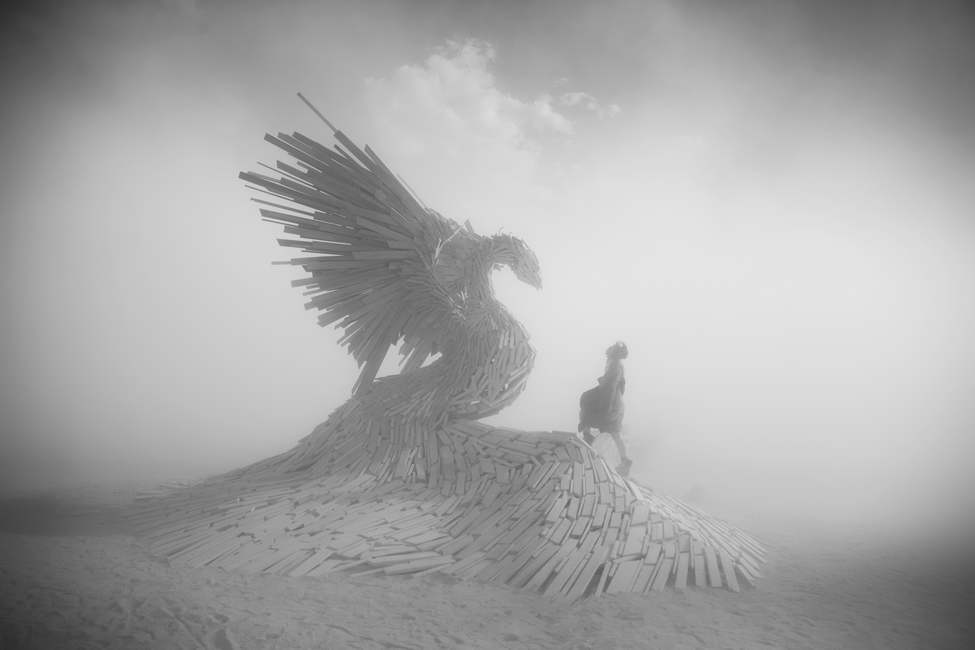
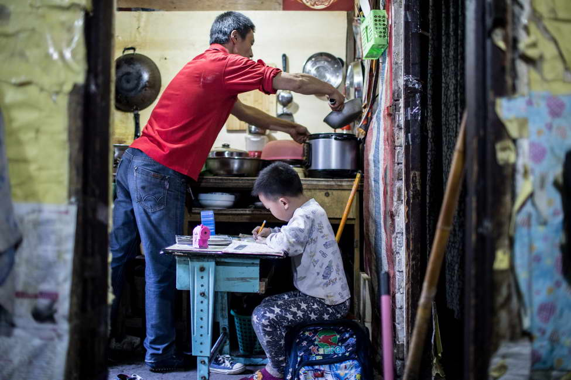
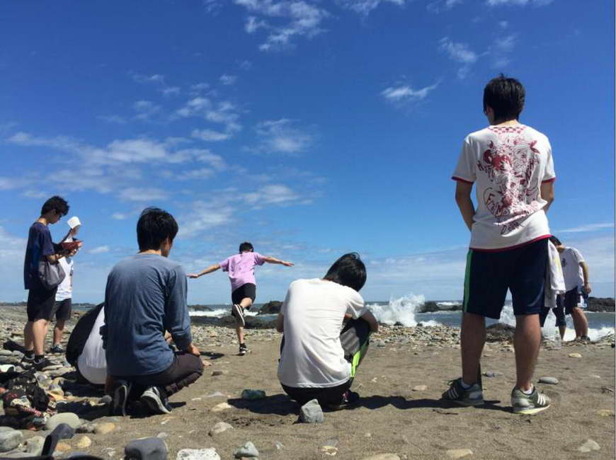
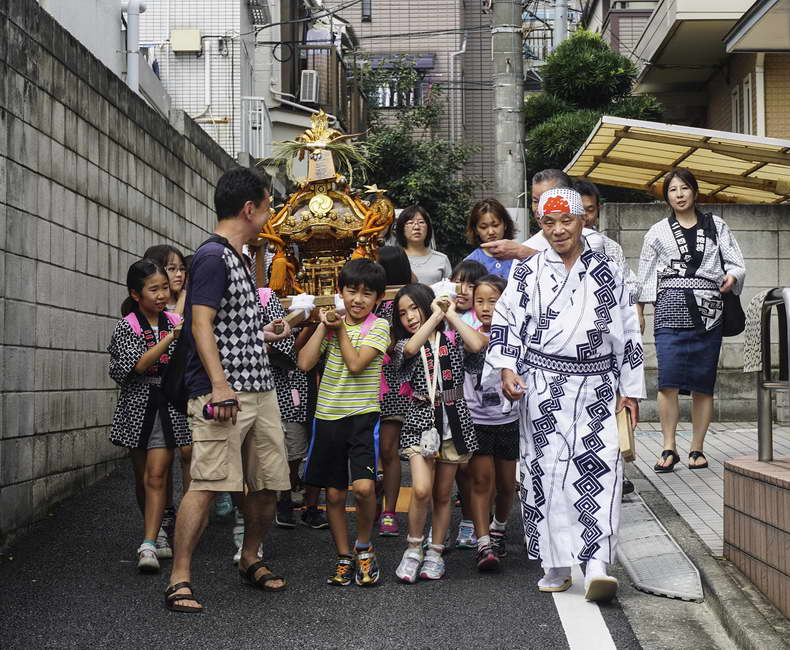

9月23日，据索尼官方消息，2017年第三季度索尼青年摄影师评选在中国摄影杂志社完成评选，现场通过对入围的100位青年摄影师作品进行深入评比、探讨，共有来自安徽的丁凤琴、来自甘肃的张健、来自四川的刘丹、来自杭州的许康平以及来自北京的关旖初等5位优秀青年摄影师最终入选（排名不分先后），成为2017年第三季“索尼青年摄影师发展计划”的支持对象。
此次2017索尼青年摄影师的评选工作由《中国摄影》杂志社主编晋永权主持，同时参与评选的评委还有来自陕西师范大学新闻与传播学院副教授李泛、视觉中国总编辑柴继军、著名时尚摄影师于捷和中央美院的摄影系副教授周岚等中国摄影界资深人士，评委们现场对入围作者作品、申报拍摄计划进行选评和论证，最终甄选出的前5名青年摄影师成为该项发展计划的入选者，获得来自索尼（中国）的影像器材和项目资金的支持。
2017第三季度5位入选索尼青年摄影师：


丁凤琴参选作品－《午夜剧场》
丁凤琴在重庆求学期间，曾参加重庆灰空间“乌托邦是个希腊词”展，并在十方艺术中心举办个展《午夜剧场》。青春充满着躁动、不安、焦虑、迷茫、游离、矛盾、认真、做作等各式各样的情绪与状态。自2016年起创作《午夜剧场》，共拍摄18至29岁的百位青年男女，以青春为主题，通过镜头展示现代青年人夜晚的状态。
她坚信，摄影基本的功能是记录，是个人生命体验的记录，亦是社会现场和重大历史的记录。对于她而言，对摄影的专注，对生活的深刻体会，对社会的融入，最终凝结在一张张饱含过往积淀与临场灵感的照片之中。她也在通过努力，向心中敬仰的南·戈尔丁、泰伦·西蒙、志贺里江子等摄影前辈致敬，找寻属于自己的微观叙事摄影风格。
著名时尚摄影师于捷，对此发表看法，《午夜剧场》以一套貌似很不成熟的拍摄技术实现了新青年饱含激情的自我宣泄。影像富有张力和能量，传达了当下潮流青年的大胆实验和自我放逐的典型心态。


张健参选作品－《东乡移民》
张健，甘肃省摄影家协会会员、甘肃省民间文艺家协会会员、甘肃省青年摄影家协会理事、甘肃省现代摄影学会会员。他所拍摄的参选作品《东乡移民》，题材取自于1996年疏勒河项目和2006年的引洮工程的拆迁移民。在甘肃省酒泉各县市周边，先后共安置的15.8万移民，他们的生活状态、习俗文化、儿童教育，都是张健所关注、记录的内容。张健介绍说，东乡族是甘肃省特有的少数民族，广袤的黄土地滋养了东乡族人的身体，世代传唱的花儿丰富了东乡族人的生活，穿越千年的《古兰经》指引着东乡族人的精神世界，他们是虔诚伊斯兰教教徒，有自己的语言与文明。
陕西师范大学新闻与传播学院副教授李泛，对张健表示欣赏，作为甘肃本地青年摄影师，能够深入生活，用平常视角记录东乡移民难能可贵。《东乡移民》之所以入围，评委看重的是朴实无华的镜头下那颗热爱生活、记录家乡的人文情怀。在快餐生活的当下，俯下身、镜头向下看的人文意识值得称道。在申报的作品中，《东乡移民》尤其打动评委，但影像语言表达还有上升空间，希望在以后拍摄中，坚持普世情怀的同时，影像表达叙事能够更加缜密、严谨、流畅。


刘丹参选作品－《乌托之国》
刘丹热爱生活、热爱旅行、热爱摄影，喜欢通过镜头用更广阔的角度去认知世界，去探索未知领域，去思索当代社会。《乌托之国》记录的是美国火人节的盛况。火人节，以集异想天开与荒诞之大成而著称，是年轻人展示自我个性的舞台，通过“激进的表达自我”，传递“爱与和平”，并在一片孤独沙漠中净化自我，引发人们内心涌动的思索。
刘丹希望能够通过镜头，记录下这群年轻人“释放自我”的方式，传递这群人“表达自我”的价值观，也希望通过拍摄多元文化环境下的故事，用影像传递温暖，为更多的人提供他人的思想，让大部分相同的人，宽容的去对待那些少部分不同的人，用包容的眼光看世界。
视觉中国总编辑柴继军表示，刘丹的组照与单幅整体看，组照远远好于单幅。尤其是《乌托邦》，凸显了作者对黑白影像的把握能力。整组图片在题材选择、影调氛围的把握上非常成熟，可以看出作者在人文故事的选题上有丰富的经验。纵观第一至第三季度的参选作品，普遍存在组照强于单幅的情况，客观上由于网络媒介对系列组图的需求激增，单幅图片在网络传播场景展现的空间越来越少，这些对年轻摄影师影响较大，需要大家思考。

许康平选作品－《重庆棒棒军》
许康平曾在浙江省杭州市一家报社任新闻摄影记者，重点拍摄社会、体育和财经新闻。在此期间，持续记录重庆棒棒军的生活点滴，反应这一人群的生存状态，也在向公众传递用勤劳双手创造美好未来的正能量。一张大手牵小手的照片，也成为每年父亲节传播度最广的照片。许康平表示，这个拍摄项目，从2010年开始拍摄，会持续进行下去。
中央美院的摄影系副教授周岚点评道，摄影师许康平具备敏锐地观察力和表现力，能够关注平凡的劳动生活，捕捉日常中诙谐生动的时刻，作品平实自然，散发着活泼与真实的力量。


关旖初参选作品－《我在日本上大学》
关旖初，在日本留学，就读于日本明治大学，在与外国友人们交流的时候，在向好友讲述赴日留学理由的时候，她发现人们对于国外的“不了解”产生了诸多的误会。自幼接触摄影的她，最初只是记录身边发生的事情，留下自己的回忆。对于摄影的兴趣与热爱，让她鼓起勇气，拿起相机，用镜头描绘她眼中的日本景象，也希望能够通过还原本真的照片，增进文化的交流，减少隔膜。
《中国摄影》杂志社主编晋永权表示，从小学到中学再到大学，从居家到校园再到异国，小关同学的书包里从没拉下照相机。这位考古系的小女生，七八年前就立下志向，将来要当策展人。年轻人的梦想，要支持一下！
2017年第三季度的索尼青年摄影师评选已尘埃落定，五位入选的摄影师以扎实的摄影功底与充满激情的作品，征服了评委导师，相信在未来他们也会征服更多的眼睛。
索尼青年摄影师发展计划
“索尼青年摄影师发展计划”是索尼（中国）有限公司为推动影像文化发展、发现青年摄影人才而启动的针对中国青年摄影师的发展项目。此计划旨在帮助更多有才华的青年摄影师实现摄影创作梦想，推进摄影文化在青年人群中的普及。2017“索尼青年摄影师发展计划”入选的索尼青年摄影师将获得由索尼提供的全画幅微单器材一套（机身+镜头），以及相应的项目支持资金。
2017索尼青年摄影师发展计划第四季度选评信息：
2017年10月01日，启动作品征集、拍摄计划征集，参选摄影师按申报条件投稿申报
2017年11月10日，选送作品提交截止
2017年12月01日，拍摄计划提交截止
2017年12月27日，公布2017年第四季度索尼青年摄影师计划最终入选摄影师的入选名单
更多 “索尼青年摄影师发展计划”的信息，请访问索尼官网：http://www.sony.com.cn/young2017
了解更多动态请扫描二维码关注我们的公众号：